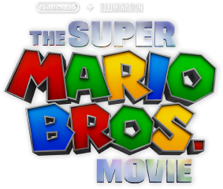

Enquanto trabalham no subsolo para consertar um cano principal de água, os encanadores do Brooklyn, Mario e o irmão Luigi são transportados por um cano misterioso e vagam por um novo mundo mágico. Mas quando os irmãos se separam, Mario embarca em uma jornada épica para encontrar Luigi.